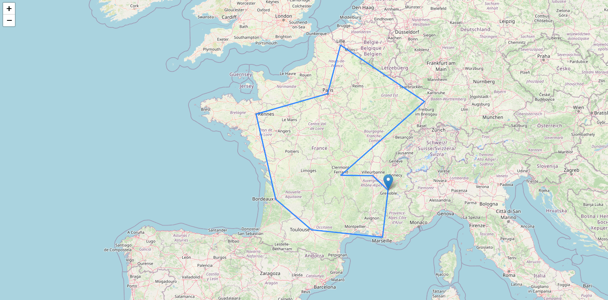
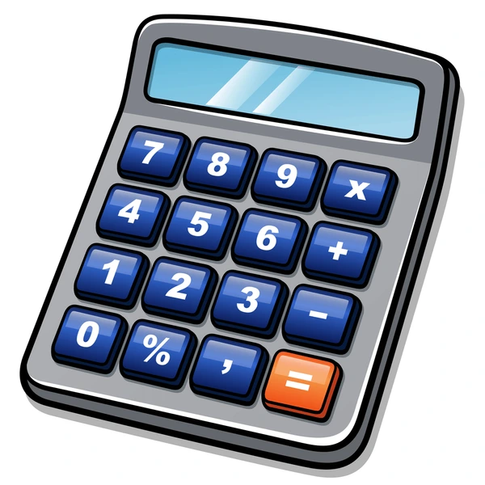
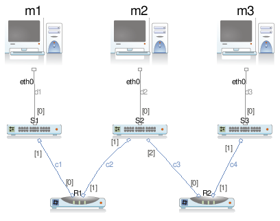
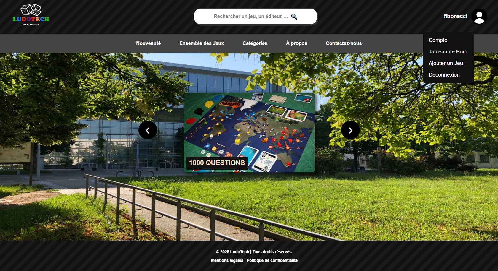
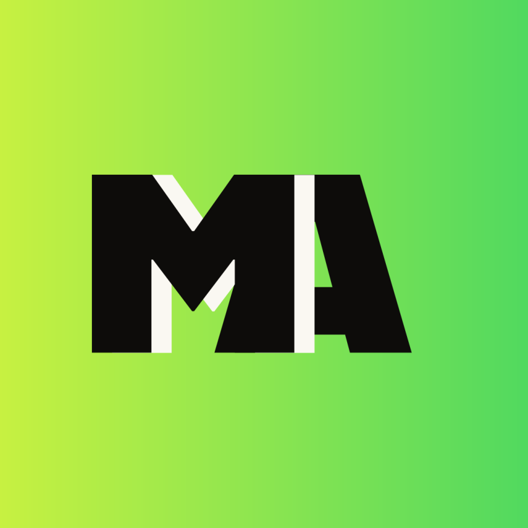
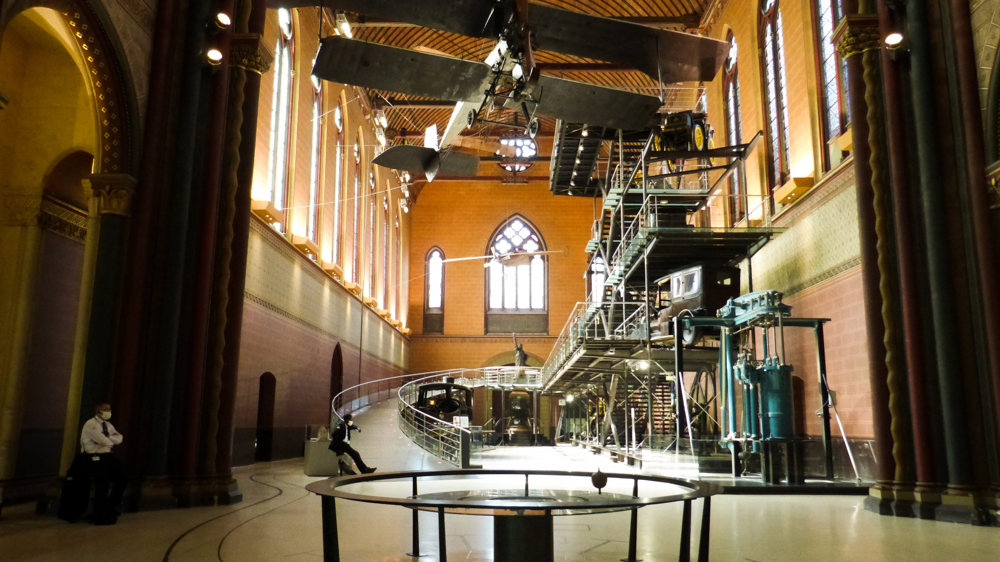
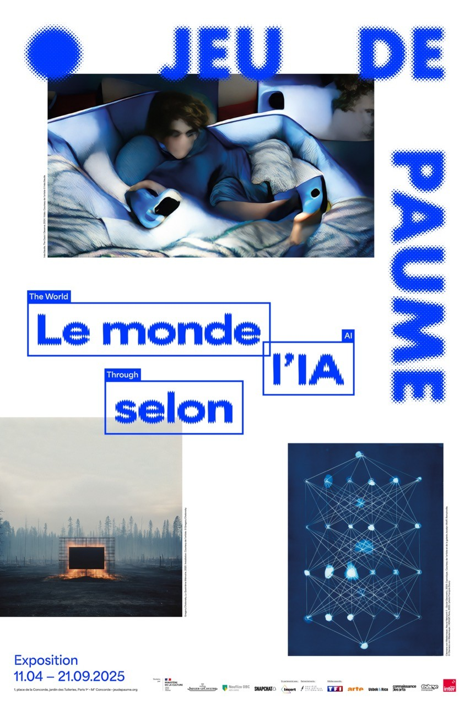
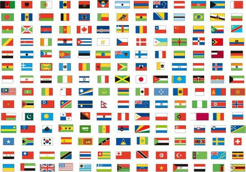

Cliquez sur les cartes pour voir plus de détails
Je suis actuellement étudiant en BUT 3 Informatique à l'IUT de Sorbonne Paris Nord, à Villetaneuse. Passionné par l'informatique depuis mon plus jeune âge, j'ai toujours été attiré par le fonctionnement des technologies numériques et la manière dont elles peuvent résoudre des problèmes...
Quand j'ai intégré le BUT 1, je savais que je voulais travailler dans l'informatique, mais je ne savais pas encore dans quel domaine précis...
C'est en entrant en BUT 2 que les choses ont vraiment évolué. J'ai gagné en compétences techniques, mais aussi en confiance personnelle...
Cette troisième année de BUT représente l'aboutissement de tout ce que j'ai appris depuis mon arrivée à l'IUT. J'y suis arrivé avec beaucoup plus d'expérience, de méthode et de confiance qu'en première année...
Mes différents stages en entreprise ont été une étape importante de mon parcours et de mon évolution professionnelle. Ils m'ont fait prendre conscience de tout le chemin parcouru...
Technologies et outils que je maîtrise
Avancé
Avancé
Intermédiaire
Intermédiaire
Avancé
Avancé
Intermédiaire
Avancé
Intermédiaire
Intermédiaire
Intermédiaire
Intermédiaire
Intermédiaire
Débutant
Situations d'Apprentissage et d'Évaluation réalisées en BUT Informatique

Calcul des distances optimales entre villes avec Python

Modélisation UML et développement en Java

Installation d'un environnement LAMP complet

Gestion de collection de jeux de société
Développement complet d'une application web pour l'université

Conception et développement d'une application mobile de recommandation de mangas et animés

Visite du musée des Arts et Métiers et découverte de l'histoire des inventions

Visite de l'exposition sur l'intelligence artificielle au Jeu de Paume

Site éducatif sur les capitales des pays du monde
Cliquez sur les cartes pour voir plus de détails
Dans le cadre de ma deuxième année de BUT Informatique à l'Université Sorbonne Paris Nord, j'ai effectué un stage de 8 semaines au sein de Nesri Discount, une entreprise spécialisée dans la vente en ligne de produits électroménagers et électroniques...
Dans le cadre de ma troisième année de BUT Informatique à l'Université Sorbonne Paris Nord, j'ai effectué un stage de 14 semaines au sein de GIMA Transmission Technology...
Mes réalisations, et les compétences développées durant mes expériences en entreprise...
N'hésitez pas à me contacter pour discuter d'opportunités ou de projets